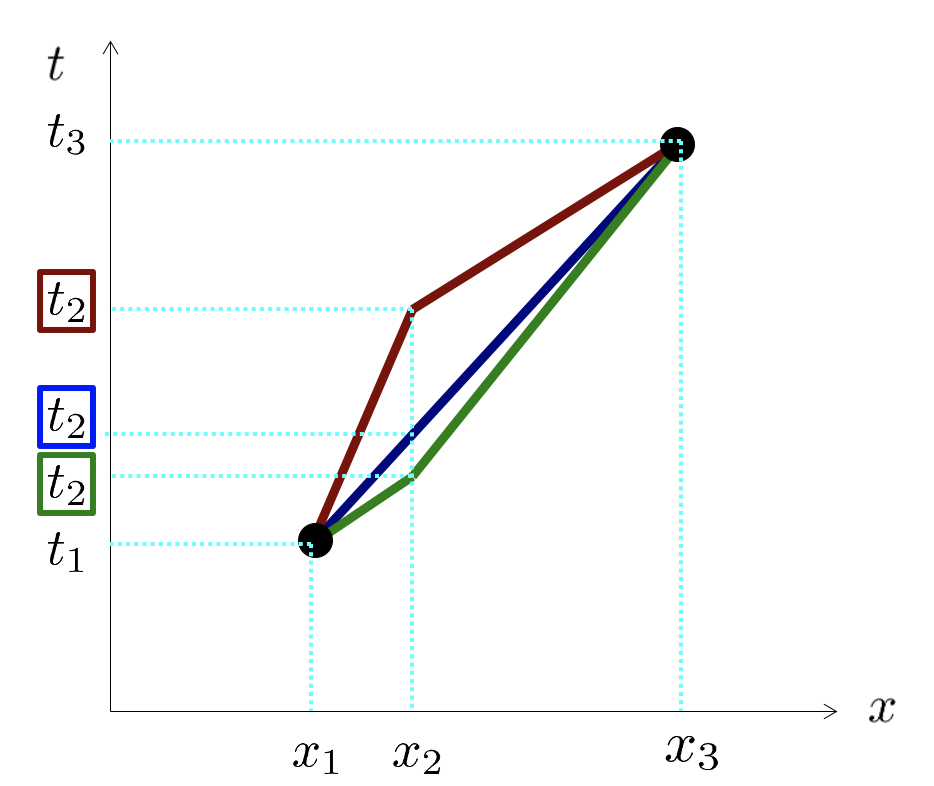

Forrige side🙂 🙁Maksimal aldringPADLET

Prinsippet om maksimal aldring sier oss av vi skal maksimalisere, altså finne maksimalpunktet for den totale egentiden Δτ13: $$\Delta\tau_{13}=\sqrt{\Delta t_{12}^2-\Delta x_{12}^2}+\sqrt{\Delta t_{23}^2-\Delta x_{23}^2}$$ For å finne et ekstremalpunkt setter vi den deriverte lik null, men den deriverte med hensyn på hva? Jo det må vel være med hensyn på t2 som er vår ukjente. Vi skal altså finne den verdien for t2 som gjør Δτ13 maksimal! MEEEN.....